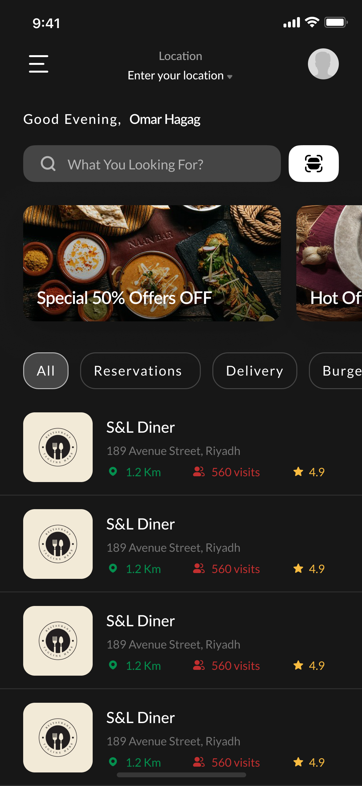
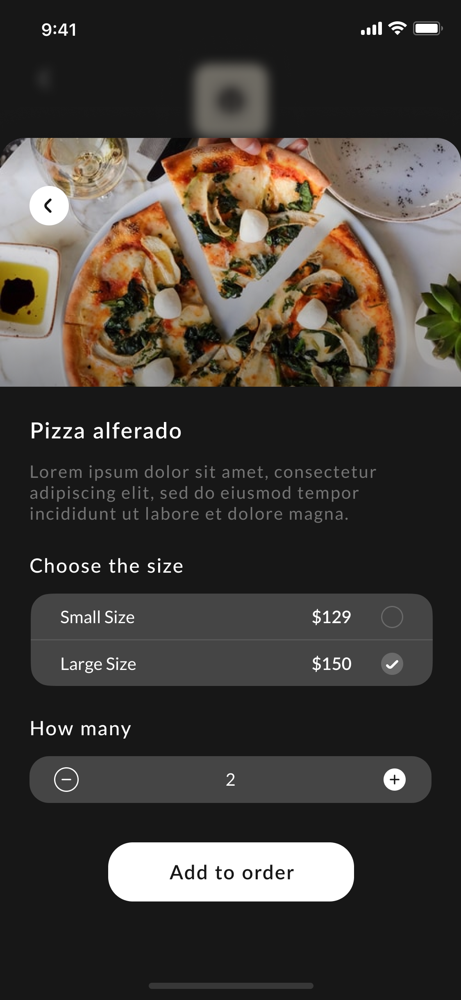

Clinically trained designer. 6 years building complex digital products across health, logistics, and enterprise — from deep user research to pixel-perfect delivery.
Led end-to-end product design across mobile, tablet, and multi-user dashboards — translating complex operational workflows into clear, scalable experiences for different user types.


Designed the Driver App and Dispatcher, Business, and Admin dashboards — simplifying complex multi-stakeholder journeys across role-based experiences for a last-mile logistics platform.
Led design delivery across multiple app and web products — aligning UX with business goals, establishing scalable patterns, and driving consistency across teams over 3 years.
Built strong foundations across ICIGAI, Evaro, Tartil, and Gameball — gaining broad exposure to different product types, service flows, and user needs across varied domains.
Clinically trained Senior Product Designer with an MBChB and active frontline medical experience. I've spent 6 years designing complex digital products across web, mobile, and multi-user platforms — specialising in translating clinical, operational, and user needs into clear, lower-friction workflows.
Real clinical experience means I understand what users actually go through — not just what they say in a research session. This changes every design decision.
A beautiful screen that breaks the workflow is a failure. I design for the entire system — the handoffs, the edge cases, the 3am emergency use.
Complexity is the enemy. Every interaction should feel obvious. If users need training to use something I designed, I haven't finished designing it.